|
Storyboard
The storyboard tool provides an aid to the design of graphical
user interfaces. The tool provides a number of common graphical
components which may be grouped together on a number of pages. Navigation
links may be added to show how interaction with a component can
cause a transition or action to occur. Complex interfaces may be
modeled using this tool by making use of the hierarchical decomposition
facility. The flexible nature of this tool allows it to be used
to model a variety of user interface type systems.
Storyboards can be created independently or as a subordinate of
elements within other models, thus allowing the definition of a
graphical user interface within a specific context. e.g. A storyboard
model can be created as a subordinate of a process within either
a conceptual model
or a data flow diagram.
They can also be created to help define the graphical user interaction
required during a particular UML
use-case. Entities within entity
relationship diagrams and elements within XML
models may also contain storyboards as subordinate models. Finally,
elements within hierarchy
charts can contain underlying storyboards, thus allowing a high
level hierarchical type design structure to be defined.
To view the main multi-CASE help page click here
|
|
|
|
Storyboard Models
The storyboard tool can be used to design various types of graphical user interface,
from web-based front ends to application dialogue boxes. A storyboard model
consists of a number of pages containing graphical components
and navigation links. Together these allow the design
of the presentation and navigational behavior of graphical user interfaces.
The graphical components represent either static display information (such as
text) or objects with which the end users will interact
(such as buttons). Special notes may
be added to a diagram to provide informal comments regarding the model or specific
components within the model. It is also possible to represent databases on a
storyboard model by using the database or xml
schema components. The pages, graphical components and notes shown on a
storyboard may also contain an underlying flow
chart model. This may be used to define algorithmic type behavior that is
performed during specific circumstances, such as when a page is first displayed;
a button is pressed; or a drop down list needs populating.
An example of a simple storyboard model is provided.
For general information about working with diagrams within the QSEE environment
click here.

Storyboard Page
Definition: A storyboard page may be used to represent either a single
page or view within a graphical user interface. A page is typically used to
group related components that are to be displayed together. A page usually contains
several other components such as text fields, buttons
and scroll bars etc. Each page may contain a subordinate
model, thus providing a mechanism for managing complexity by using hierarchical
decomposition. See the section on subordinate
models for more information.
Representation: A page is represented by a rectangular shaped node that
is (by default) white in color. The name of the page is shown at the top within
a solid bar. If the page contains a subordinate storyboard model then the name
is automatically given a "(*)" suffix. e.g. an empty page with no
subordinate model defined.

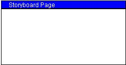
Creation: A page is added by right clicking on the storyboard diagram
editor or on the model icon within the project tree and selecting the "Add
Page" option from the menu. Position the page outline where you wish it
to be placed on the diagram and left click, enter the name when prompted and
click "OK".
Rules: A page must be created as part of the diagram (and not as a component
of another page).
Operations: Move Forwards/Backwards, Bring to Front, Send to Back, Delete,
Add Static Text, Add Text Field, Add Button, Add Check Box, Add Radio Button,
Add Drop Down List, Add Static Box, Add Scrollbar, Add Rule, Add Image, Add
Graphic, Add Component. Add Navigation Link, Add/View/Delete Subordinate Storyboard,
Add/View/Delete Flow Chart, Change Page Color, Change Title Color, Change Bar
Color, Edit Page Annotation, Edit Page Name.
Notes
Definition: Notes allow informal annotations to be defined within a
model. A note is not intended to represent a visual element within the final
system. Links can be used to attach notes to one or more elements or the diagram
itself in order to give the note a specific context. The textual contents of
the note can be anything that is deemed useful, i.e. they are simply comments
that convey any information.
Representation: A note is represented by a rectangular shaped node with
the top right corner folded over. A dotted link is shown when a note is linked
to an element. The note holds a single piece of text. e.g.
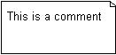
Creation: A note is added by right clicking on the storyboard diagram
editor or on the model icon within the project tree and selecting the "Add
Note" option from the menu. Position the note outline where you wish it
to be placed on the diagram and left click, enter the required text when prompted
and click "OK".
Rules: A note must be created as part of the diagram (and not as a component
of a page).
Operations: Move Forwards/Backwards, Bring to Front, Send to Back, Delete,
Link To Element, Add/View/Delete Flow Chart, Change Note Color, Change Text
Color, Change Text Format, Edit Note Details.
Database
Definition: A database element may be added to a storyboard to allow
the definition of a data model with which the defined graphical user interface
interacts (or depends upon). A database element is not intended to represent
a visual element within the final system. A database element contains its own
underlying entity relationship
diagram. Links can be used to attach a database to one or more elements
in order to specifically relate them to the database. The usage of the database
element is dependent upon the type of interface being defined. i.e. not all
interfaces require access to persistent data stored within a database management
system, therefore there is no need to define such an underlying model in these
circumstances.
Representation: A database is represented by a cylinder shaped node
that is (by default) cyan in color. The name of the database is shown within
the node shape. e.g.
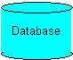
Creation: A database is added by right clicking on the storyboard diagram
editor or on the model icon within the project tree and selecting the "Add
Database" option from the menu. Position the database outline where you
wish it to be placed on the diagram and left click.
Rules: A database must be created as part of the diagram (and not as
a component of a page).
Operations: Move Forwards/Backwards, Bring to Front, Send to Back, Delete,
Link To Element, View Data Model, Change Database Color, Change Text Color,
Edit Database Annotation, Edit Database Name.
XML Schema
Definition: An XML Schema element may be added to a storyboard to allow
the definition of an XML Schema model with which the defined graphical user
interface interacts (or depends upon). An XML Schema element is not intended
to represent a visual element within the final system. An XML Schema element
contains its own underlying XML Schema Model
. Links can be used to attach an XML Schema to one or more elements in order
to specifically relate them to the model. The usage of the XML Schema element
is dependent upon the type of interface being defined. i.e. not all interfaces
require access to data within an XML Document, therefore there is no need to
define such an underlying model in these circumstances.
Representation: An XML Schema is represented by a cylinder shaped node
that is (by default) lilac in color. The name of the XML Schema is shown within
the node shape. e.g.
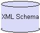
Creation: An XML Schema is added by right clicking on the storyboard
diagram editor or on the model icon within the project tree and selecting the
"Add XML Schema" option from the menu. Position the XML Schema outline
where you wish it to be placed on the diagram and left click.
Rules: An XML Schema must be created as part of the diagram (and not
as a component of a page).
Operations: Move Forwards/Backwards, Bring to Front, Send to Back, Delete,
Link To Element, View CML Schema Model, Change XML Schema Color, Change Text
Color, Edit XML Schema Annotation, Edit XML Schema Name.
Static Text
Definition: A static text component allows textual label type information
to be represented on a storyboard model. These type of components are usually
used to represent information displayed to the user, rather than something with
which the user interacts. Static text if often used to display titles; instructions;
definitions etc. Facilities are provided that allow the appearance of the text
to be configured as required. Like all components, static text may be positioned
within a specific page or on the diagram itself.
Representation: A static text component is shown as a piece of text
with a value determined by the user. A bounding rectangle may be resized and
moved as required. The bounding rectangle causes the text to word wrap if its
width is less than the width of the current text value. e.g. a static text component
with a value of "Static Text".
Creation: A static text component is added by right clicking on the
storyboard diagram editor or a page within the model and selecting the "Add
Static Text" option from the menu. Position the static text component outline
where you wish it to be placed on the diagram and left click, enter the value
when prompted and click "OK".
Rules: none
Operations: Move Forwards/Backwards, Bring to Front, Send to Back, Delete,
Add Navigation Link, Add/View/Delete Flow Chart, Change Text Color, Format Text,
Edit Text Annotation, Edit Text.
Text Field
Definition: A text field component allows the definition of an area
in which the end user will be able to input textual information. These type
of components are often used to represent information capture, rather than something
that is displayed to the user. Text fields are usually used to allow the user
to input information which is then processed in some way by the application
underlying the user interface. Like all components, text fields may be positioned
within a specific page or on the diagram itself.
Representation: A text field is represented by a rectangular shaped
node that is (by default) white in color. Optional text may be shown within
the text field that can represent either, i) a description of the purpose of
the field, or ii) an initial default value that may be shown within the field
prior to user entry. By default the value shown within the text field is "Text
Field", e.g.
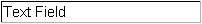
Creation: A text field component is added by right clicking on the storyboard
diagram editor or a page within the model and selecting the "Add Text Field"
option from the menu. Position the text field component outline where you wish
it to be placed on the diagram and left click.
Rules: none.
Operations: Move Forwards/Backwards, Bring to Front, Send to Back, Delete,
Add Navigation Link, Add/View/Delete Flow Chart, Change Field Color, Change
Text Color, Format Field Text, Edit Text Field Annotation, Edit Text.
Button
Definition: A button component allows the representation of an area
within the user interface that can be clicked by the end user. These type of
components are usually used to allow simple user interaction. A button contains
a small amount of text that specifies the purpose of the interaction. Like all
components, buttons may be positioned on a specific page or on the diagram itself.
Representation: A button is represented by a rectangular shaped node
that is (by default) gray in color. A textual name label is shown within the
button area. e.g. a "Submit" button.
Creation: A button component is added by right clicking on the storyboard
diagram editor or a page within the model and selecting the "Add Button"
option from the menu. Position the button component outline where you wish it
to be placed on the diagram and left click, enter the button name when prompted
and click "OK".
Rules: none.
Operations: Move Forwards/Backwards, Bring to Front, Send to Back, Delete,
Add Navigation Link, Add/View/Delete Flow Chart, Change Button Color, Change
Text Color, Format Button Text, Edit Button Annotation, Edit Button Name.
Check Box/Radio Button
Definition: Check boxes and radio buttons are components that allow
the definition of options that may be selected by an end user. These type of
components are often used to represent two-state options, e.g. on/off, yes/no,
true/false. These components usually have a small amount of text that specifies
the purpose of the option. These components are closely related, the difference
being that radio buttons are used to represent groups of mutually exclusive
options, whereas check boxes are used to represent independent options. The
current style of this component is selectable from the context sensitive menu.
Like all components, check boxes and radio buttons may be positioned on a specific
page or on the diagram itself.
Representation: A check box is represented by a small rectangular shaped
node and a radio button is represented by a small circular shaped node. Both
may display text to the right of the node in order to convey the option's purpose.
e.g.
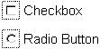
Creation: A check box or radio button is added by right clicking on
the storyboard diagram editor or a page within the model and selecting the "Add
Check Box/Radio Button" option from the menu. Position the option component
outline where you wish it to be placed on the diagram and left click, enter
the option name when prompted and click "OK".
Rules: none.
Operations: Move Forwards/Backwards, Bring to Front, Send to Back, Delete,
Add Navigation Link, Is Radio Button, Add/View/Delete Flow Chart, Change Text
Color, Format Option Text, Edit Option Annotation, Edit Option Text.
Drop Down List
Definition: A drop down list component allows the definition of an area
in which the end user will be able to either select or input textual information.
These type of components are usually used to represent information capture from
a list of predefined values. Drop down lists allow the user to select textual
information from a list of possible options. The options to be shown in the
list can be specified as text within the component. Like all components, drop
down lists may be positioned within a specific page or on the diagram itself.
Representation: A drop down list is represented by a rectangular shaped
node that is (by default) white in color with a down arrow button show to the
right. Text options may be shown within the list that can represent either,
i) a description of the purpose of the list, or ii) an initial set of values
that are to be shown within the list. By default the value shown within the
drop down list is "Drop Down List", e.g.
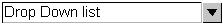
Creation: A drop down list component is added by right clicking on the
storyboard diagram editor or a page within the model and selecting the "Add
Drop Down List" option from the menu. Position the list component outline
where you wish it to be placed on the diagram and left click.
Rules: none.
Operations: Move Forwards/Backwards, Bring to Front, Send to Back, Delete,
Add Navigation Link, Add/View/Delete Flow Chart, Change Box Color, Change Text
Color, Format Text, Edit Annotation, Edit Text.
Static Box
Definition: A static box component provides a mechanism for visually
grouping related components within a model. These type of components can optionally
have a textual name that identifies the purpose of the grouping. Like all components,
static boxes may be positioned within a specific page or on the diagram itself.
Representation: A static box is represented by a rectangular outline
shape that is (by default) gray in color. The optional name of the static box
is shown at the top left-hand side. e.g.
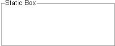
Creation: A static box component is added by right clicking on the storyboard
diagram editor or a page within the model and selecting the "Add Static
Box " option from the menu. Position the static box component outline where
you wish it to be placed on the diagram and left click, enter the name when
prompted and click "OK".
Rules: none.
Operations: Move Forwards/Backwards, Bring to Front, Send to Back, Delete,
Add Navigation Link, Add/View/Delete Flow Chart, Change Box Color, Change Text
Color, Change Text Background Color, Format Box Text, Edit Box Annotation, Edit
Box Text.
Scroll Bars
Definition: A scroll bar component allows the identification of an area
that may be scrolled by the end user. These type of components are usually placed
alongside other components such as multi-line text fields.
Scroll bars can be either vertical or horizontal in orientation. Double clicking
a scroll bar causes the orientation to be changed. Like all components, scroll
bars may be positioned within a specific page or on the diagram itself.
Representation: A scroll bar is represented by a rectangular shaped
node that is (by default) gray in color. Two small arrow buttons are shown at
each end of the scroll bar. e.g. a horizontal scroll bar.
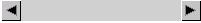
Creation: A scroll bar component is added by right clicking on the storyboard
diagram editor or a page within the model and selecting the "Add Scroll
Bar " option from the menu. Position the bar component outline where you
wish it to be placed on the diagram and left click.
Rules: none.
Operations: Move Forwards/Backwards, Bring to Front, Send to Back, Delete,
Add Navigation Link, Is Horizontal, Add/View/Delete Flow Chart, Change Bar Color,
Edit Bar Annotation.
Horizontal/Vertical Rule
Definition: A rule component allows the definition of a dividing line
within the graphical model. These type of components are usually used as visual
separators between other components. Rule components can be either vertical
or horizontal in orientation. Double clicking a rule causes the orientation
to be changed. Like all components, rules may be positioned within a specific
page or on the diagram itself.
Representation: A rule is represented by a slim rectangular shaped node
that is (by default) light purple in color. e.g. a horizontal rule.
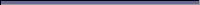
Creation: A rule component is added by right clicking on the storyboard
diagram editor or a page within the model and selecting the "Add Rule"
option from the menu. Position the rule component outline where you wish it
to be placed on the diagram and left click.
Rules: none.
Operations: Move Forwards/Backwards, Bring to Front, Send to Back, Delete,
Add Navigation Link, Is Horizontal, Change Color, Edit Annotation.
Graphic
Definition: A graphic component provides a mechanism to display arbitrary
graphical elements on a storyboard. These components are usually used to define
a colored area or boundary. Graphic components may be rectangular or elliptical
in shape. Like all components, graphic elements may be positioned within a specific
page or on the diagram itself.
Representation: A graphic element is represented by either a rectangular
or elliptical solid shape. e.g. Two overlapping graphic elements.
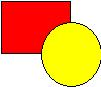
Creation: A graphic component is added by right clicking on the storyboard
diagram editor or a page within the model and selecting the "Add Graphic"
option from the menu. Position the graphic component outline where you wish
it to be placed on the diagram and left click.
Rules: none.
Operations: Move Forwards/Backwards, Bring to Front, Send to Back, Delete,
Add Navigation Link, Add/View/Delete Flow Chart, Change Background Color, Change
Line Color, Make Elliptical, Make Rectangular, Edit Graphic Annotation.
Image
Definition: An image component may be used to display any graphical
image on the storyboard. The image to be shown is loaded from an image file
of an appropriate format. e.g. a JPEG file. Image components may also be shown
as place holders, for situations where the required image is currently not available.
Image components may optionally display user defined text on top of the image
area. Like all components, images may be positioned within a specific page or
on the diagram itself.
Representation: An image is represented by a rectangular shaped area
in which the selected image is displayed. If the image is currently not available
then the image is shown as a rectangular shaped place holder node. e.g. an image
component displaying the QSEE-Technologies banner.
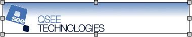
Creation: An image component is added by right clicking on the storyboard
diagram editor or a page within the model and selecting the "Add Image"
option from the menu. Position the image component outline where you wish it
to be placed on the diagram and left click. Use the displayed dialogue window
to browse and select the image required. If cancel is selected then a place
holder is created to represent the image.
Rules: none.
Operations: Move Forwards/Backwards, Bring to Front, Send to Back, Delete,
Add Navigation Link, Load New Image, View as Place Holder, Add/View/Delete Flow
Chart, Change Holder Color, Change Text Color, Format Text, Edit Image Annotation,
Edit Text.
External Component
Definition: An external component allows the representation of embedded
controls within a storyboard model. An embedded control typically represents
a complex graphical entity with which the user may interact, i.e. an animation;
a movie clip; or an audio clip. They may also be used to represent specific
component types such as a Java Applet; a Macromedia Flash Movie; or an ActiveX
control. An external component displays a textual description that typically
should be used to describe the type and nature of the component. Like all components,
external components may be positioned within a specific page or on the diagram
itself. The basic type of a component (animation / movie / audio) can be changed
at any time by selecting the appropriate option from the context sensitive menu.
Representation: An external component is represented by a rectangular
shaped node containing a textual description and a shape icon (which depicts
the type of component). By default the text shown within the external component
is "External Component" and the type is set to be an animation,
e.g.
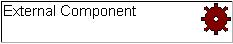
Creation: An external component is added by right clicking on the storyboard
diagram editor or a page within the model and selecting the "Add Component"
option from the menu. Position the external component outline where you wish
it to be placed on the diagram and left click, enter the description when prompted
and click "OK".
Rules: none.
Operations: Move Forwards/Backwards, Bring to Front, Send to Back, Delete,
Add Navigation Link, Is Animation, Is Movie, Is Audio, Add/View/Delete Flow
Chart, Change Component Color, Change Text Color, Format Component Text, Edit
Component Annotation, Edit Component Text.
Navigation Links
Definition: Navigation links are used to show how certain events trigger
a navigation and/or action within the graphical user interface. e.g. a link
may be used to show the navigation that takes place when a specific button is
pressed. Navigation links can include an associated textual description. This
description can be used in a number of ways, e.g. to define the event that causes
the navigation to be performed or to define the actions that are executed when
the navigation occurs.
Representation: A navigation link is represented by a line shown between
the two attached elements. By default the direction of the navigation is shown
using an arrow head at the destination end. If specified, the associated textual
description is shown close to the link. e.g. a navigation link that is activated
when the component at the source end is pressed.
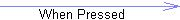
Creation: A link is added by right clicking on the element that is to
be the source of the link and selecting the "Add Navigation Link"
option from the menu. Use the mouse to position the other end of the link over
the element that is to be the destination and left click.
Rules: none.
Operations: Move Forwards/Backwards, Bring to Front, Send to Back, Delete,
Add/Remove Link Point, Show As -----
/ <---- / ----> / <--->, Change Link Color, Edit Link Annotation/Label.
Subordinate Models
Each page within a storyboard may have a subordinate storyboard
model. The subordinate model may contain its own pages and components etc. To
create a subordinate model of a page right-click on the page and select the
"Create Underlying Storyboard" option from the "Subordinate Storyboard"
sub-menu. This support for hierarchical decomposition provides a mechanism for
managing complexity within larger models. The actual approach taken is at the
discretion of the modeler. One method of using this facility could be to define
a conceptual map of the main categories within a user interface. In this case
each top level page would represent a collection of related pages/screens that
were defined in detail within the underlying subordinate models. Using this
approach the top level pages would not contain any components, since they represent
categories of screens rather than individual screens themselves.
e.g. a top level model that divides a system into two categories, namely "Browse
Screens" and "Order Screens". The subordinate storyboard models
of each of these would then contain a definition of the screens associated with
the appropriate categories. Notice how each page title has a "(*)"
suffix, indicating that a subordinate model is defined for the page.
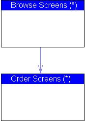
Example
Below is an example of a Storyboard model. This shows the layout of a simple
web-page containing a drop-down list, a text
field and a check box component. Two buttons
are also present; one of which is linked via a navigation
link to a window that is displayed when the button is pressed. A note
is used to describe the action performed when the "Clear" button is
pressed.

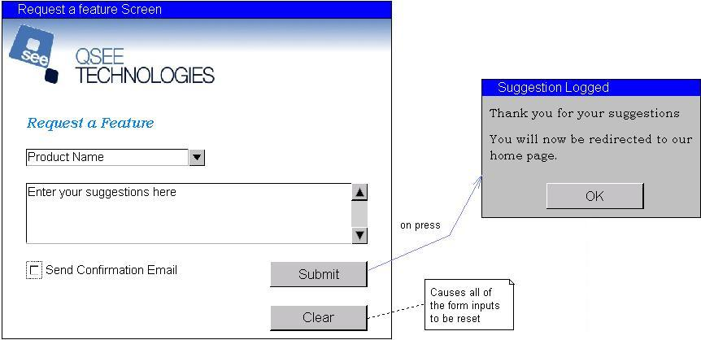